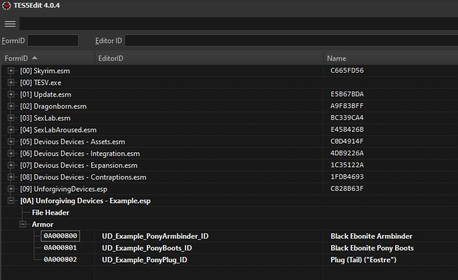

Example
Purpose of this page is to give a practical example on how to use the mod. All moding will be done with SSEEdit (TES5Edit would also work).
Papyrus scripts will be compiled using provided build scripts, so it is not required to download additional script. Basically, all you need to create this mod, is to have xEdit and working Unforgiving Devices.
So, for purpose of the example, our goal will be following to create following devices
- Ponygirl armbinder - Device will fastly repair itself if wearer doesn't move
- Ponygirl anal plug - Anal plug which whose vibration strength will change based on distance traveled. The more the wearer moves, the more will plug vibrate to reward its victim
- Ponygirl boots - Boots which will slowly reduce wearers health if they don't move
Getting started
Everytime we will be creating new device, we will use new existing devices to make our job easier. For that reason, lets open up the xEdit and select both UnforgivingDevices.esp and all DeviousDevices .esm modules (assests, integration, expansion)
Then lets find a device which we will use for our devices. Lets use following devices
- Ponygirl armbinder - Black Ebonite armbinder
- Ponygirl anal plug -
- Ponygirl boots - Black ebonite pony boots
After finding the device, right click it and select "Copy as new record into...". Rename the editor ID so it is more clear what device it is. Do not forget that you have to copy both Inventory device nad Render device!
After that, select "(new file).esp", and the one without ESM flag. This will copy our device to our new mod. Lets new our new mod "Unforgiving Devices - Example"
